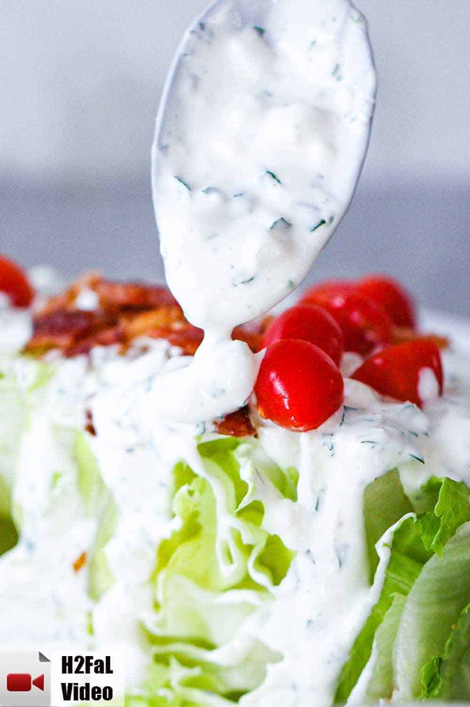

Blue Cheese Recipe
Description
With this recipe, you can make the perfect homemade blue cheese accompaniment for beautiful Buffalo Wings. With some simple ingredients and a bit of time, you'll have the perfect dip and dressing!
Ingredients:
- 1 cup mayonnaise
- 1/2 cup sour cream
- 1/4 cup buttermilk
- lemon juice (juice of 1/2 a lemon)
- 1 tbsp white wine vinegar
- 1/4 cup onion (finely chopped)
- 2 cloves garlic (minced)
- 1/4 cup flat-leaf parsley (finely chopped)
- Pinch Salt and pepper (each)
- 4 oz. blue cheese (use block, not pre-crumbled)
Steps:
- Place all the ingredients, except the blue cheese into a medium-sized bowl.
- Use your hands to crumble the blue cheese into the mixture.
- Use a fork to stir until mixed. Flatten some of the cheese with the fork against the side of the bowl.
- Cover and refrigerate for at least an hour.
Source of this recipe.
GO HOME